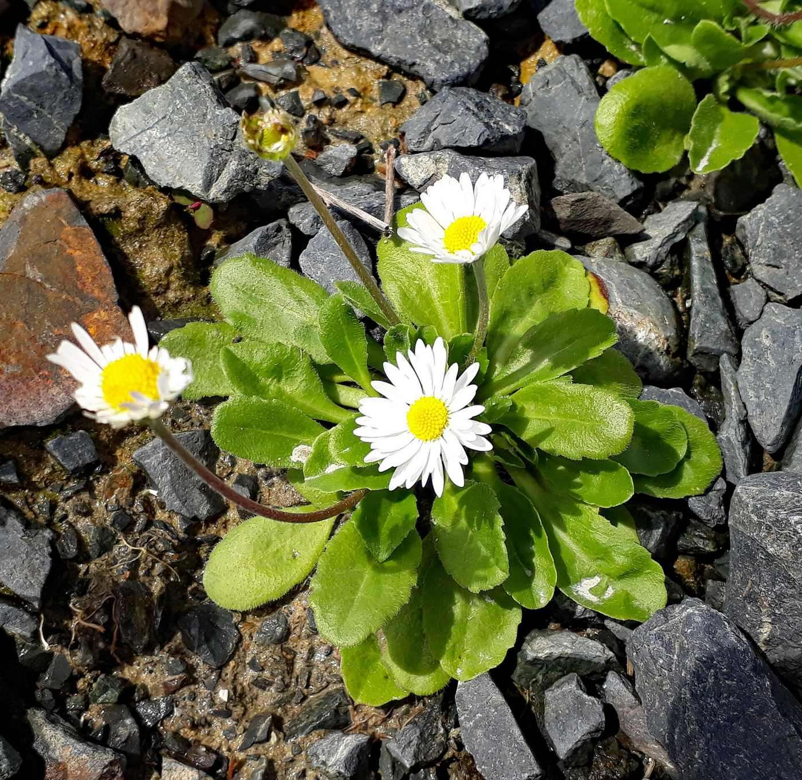
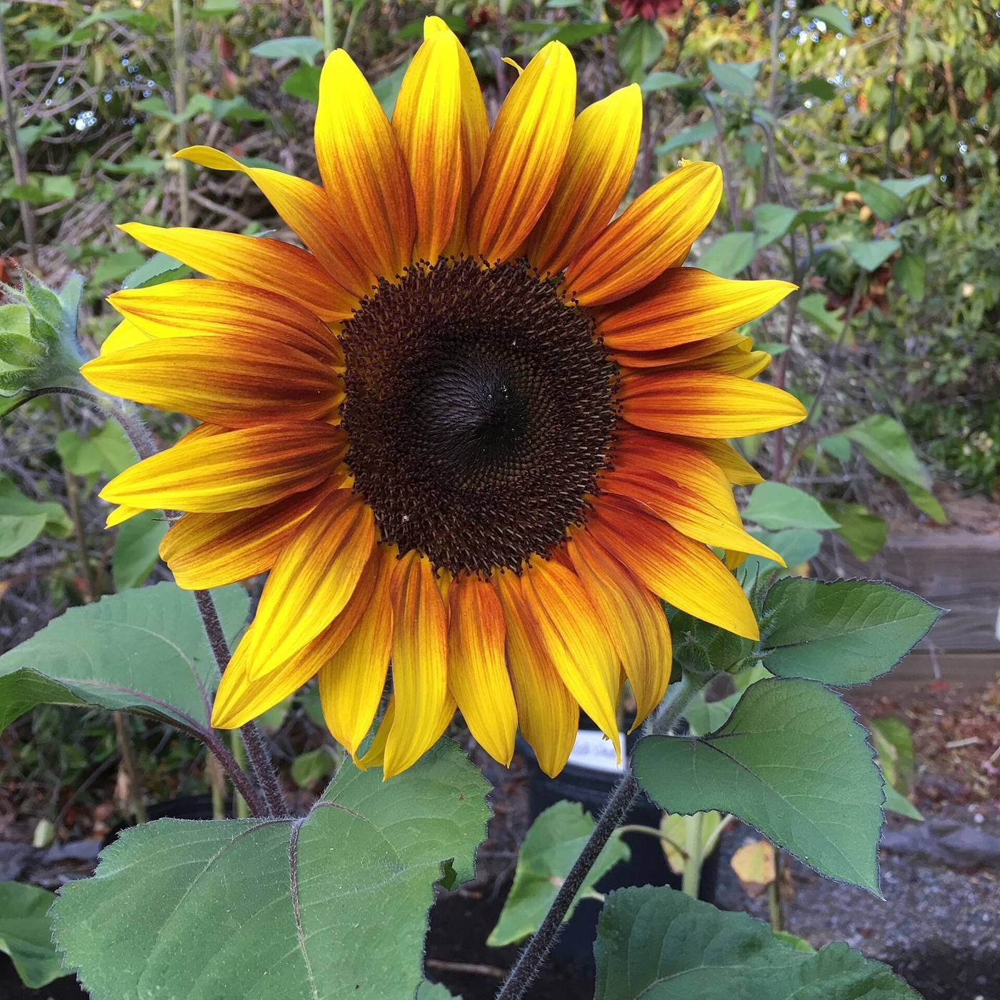
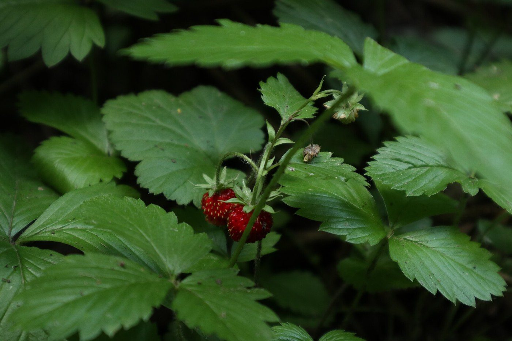

店のこと
確認できたことだけ、ここに
確認できているのは、所在地とInstagramのアカウントだけです。それ以外の内容は準備中とし、推測では書いていません。
フリー素材のイメージ


六つの部位の読みかた
図の見かた
トップの図は、カチューシャを正面から見た形を線で描いたものです。番号は凡例と同じ順で、1の弓なりの本体から、6の櫛歯まで進みます。制作側の連想で、お店の理念・由来とは無関係です。
- 1ヘッドバンド本体
- 頭の形に沿って曲がる、細い弓なりの芯。全体の骨組みになる部分。
- 2先端(エンド)
- 弓の両端にある、丸く仕上げた部分。肌に当たりやすいので角を落としてある。
- 3内側のグリップ
- 髪や肌に触れる側に貼る、すべり止めの細い帯。
- 4表地(カバー)
- 芯をくるむ布や樹脂の面。色や柄はここで決まる。
- 5飾り
- 表地の上につける、リボンなどの小さな装飾。
- 6櫛歯
- 端の内側に並べた、髪に差し込む細かい歯。
フリー素材のイメージ




ご案内
所在地とSNS
| 所在地 | 〒071-0216 北海道上川郡美瑛町大村大久保第１ 協生 |
|---|---|
| 電話 | 準備中 |
| 営業時間 | 準備中 |
| 定休日 | 準備中 |
| ご予約 | 準備中 |
| 駐車場 | 準備中 |
| SNS | Instagram @hitosaji_pan |